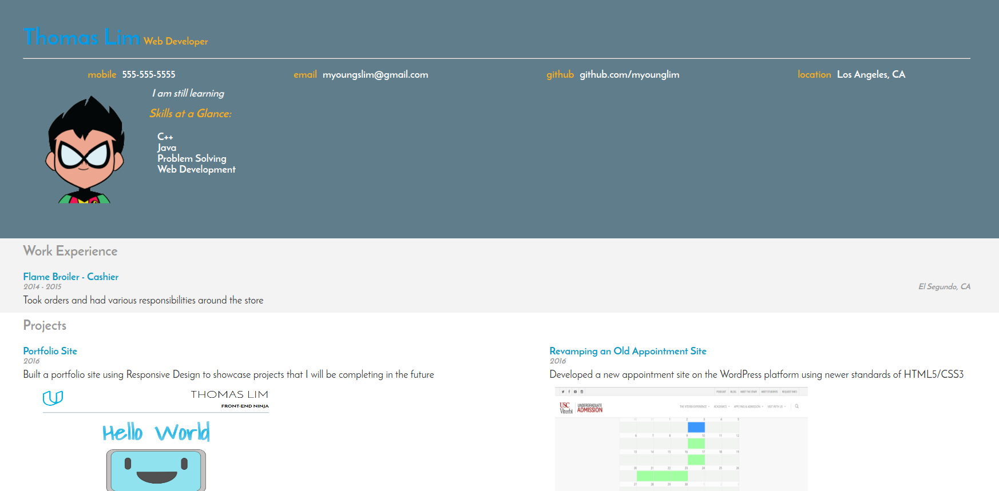
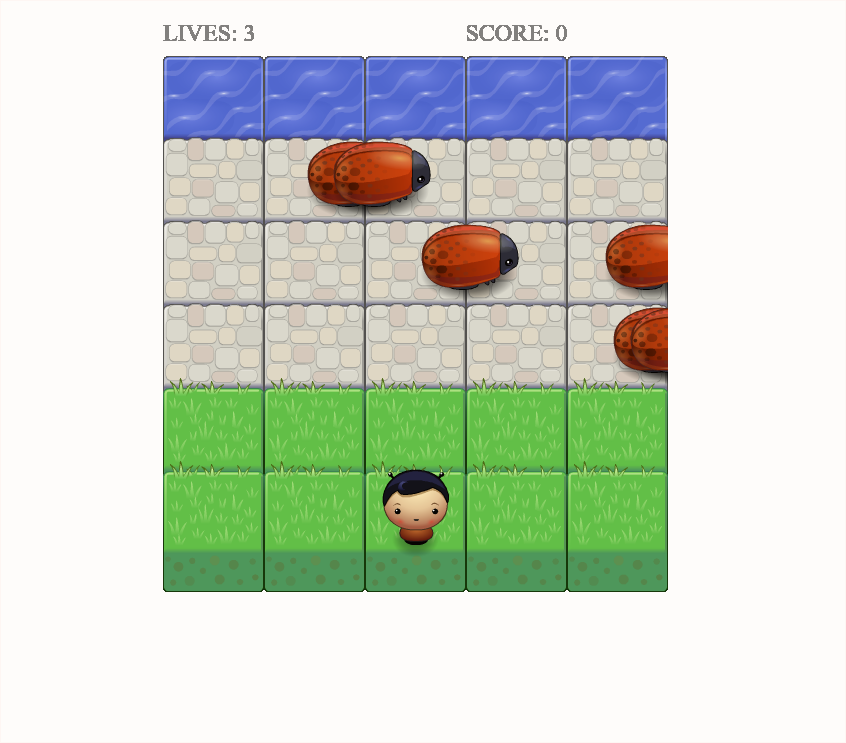
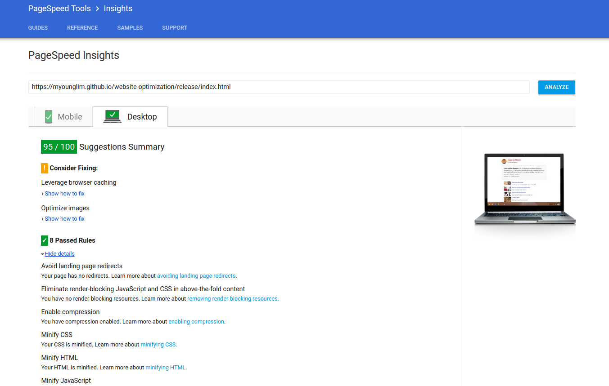
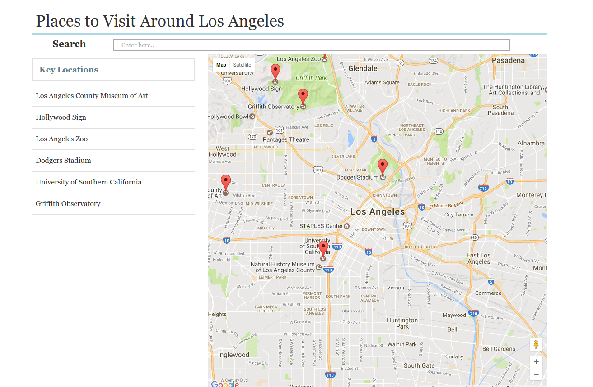
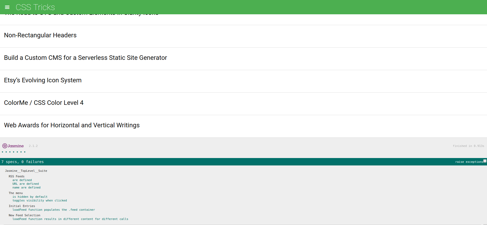
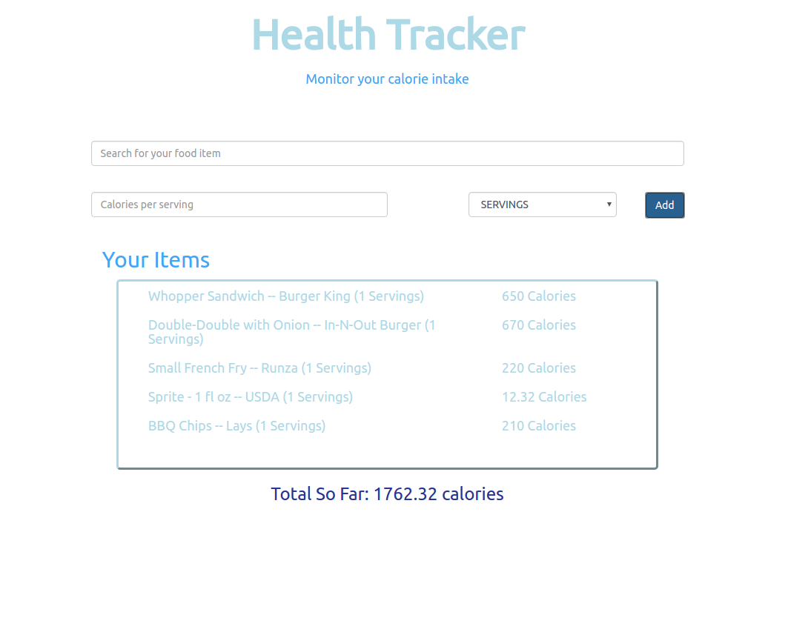

Portfolio Site
A fully responsive site for use on desktop, tablet, and mobile. Built using media queries, CSS3 flexbox, and HTML5.
 Demo the site
Source Code
Demo the site
Source Code
Interactive Resume
Built using JavaScript and jQuery to dynamically append content to the page

Demo the site
Source Code
Arcade Game Clone
Developed a remake of the game Frogger using Object Oriented JavaScript and the HTML5 canvas

Demo the site
Source Code
Website Optimization
Optimize a webpage and a web application to achieve a PageSpeed Insight target score of 90 and ensure 60fps while running

Demo the 1st site
Demo the 2nd site
Source Code
Neighborhood Map
A single page web application built using the KnockoutJS framework and the Google Maps API

Demo the site
Source Code
Feed Reader Testing
Wrote unit tests for a Feed Reader app using the Jasmine testing framework

Demo the site
Source Code
Health Tracker app
A web application built using Backbone.js framework and the Nutritionix API

Demo the site
Source Code